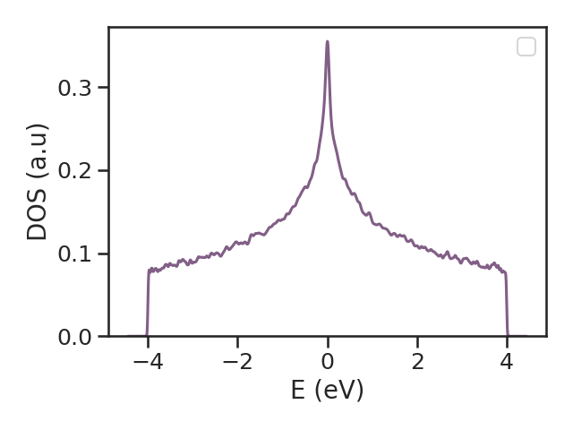

4. Calculation
The kite.Calculation object carries the information about the to-be-calculated quantities,
i.e. the target functions.
Key parameters of the calculation are included here, such as number of Chebyshev moments and number of disorder realizations.
These are used by KITEx to calculate the spectral coefficients subsequently used by KITE-tools
at the post-processing stage, e.g. to reconstruct the full energy dependence of the desired target function (see [worflow]).
The parameters given in the Examples are optimized for a standard desktop computer.
The target functions currently available are:
-
dos- Calculates the average density of states (DOS) as a function of energy.
-
ldos- Calculates the local density of states (LDOS) as a function of energy (for a set of lattice positions).
-
arpes- Calculates the one-particle spectral function of relevance to ARPES.
-
gaussian_wave_packet- Calculates the propagation of a gaussian wave-packet.
-
conductivity_dc- Calculates a given component of the DC conductivity tensor.
-
conductivity_optical- Calculates a given component of the linear optical conductivity tensor as a function of frequency for a given Fermi energy.
-
conductivity_optical_nonlinear- Calculates a given component of the 2nd-order nonlinear optical conductivity tensor.
-
singleshot_conductivity_dc- Calculates the longitudinal DC conductivity for a set of Fermi energies (uses the \(\propto\mathcal{O}(N)\) single-shot method).
KITE's first release was restricted to two-dimensional systems. However, since then, there has been an efford to expand the functionalties to three-dimensional systems. In the current release, most functionalities are compatible with 3D systems. For details, check the table below:
| Method | 2D | 3D |
|---|---|---|
dos |
||
ldos |
||
arpes |
||
gaussian_wave_packet |
||
conductivity_dc |
||
conductivity_optical |
||
conductivity_optical_nonlinear |
||
magnetic_field |
||
singleshot_conductivity_dc |
- Extensivelly used and checked
- Implemented
- Not yet implemented
Processing the output of singleshot_conductivity_dc
singleshot_conductivity_dc() works different from the other target-functions in that it just requires a single run with KITEx. Post-processing with KITE-tools is not required, and instead the required single-shot values of the DC-conductivity can be retrieved directly from
the HDF5-file once KITEx has run. You can extract the results from the HDF5 file as explained in the tutorial, with "output.h5" the name of the HDF5 file processed by KITEx:
All target functions require the following parameters:
-
num_moments- Defines the number of moments of the Chebyshev expansion and hence the energy resolution of the calculation; see Documentation.
-
num_random- Defines the number of random vectors used in the stochastic trace evaluation.
-
num_disorder- Defines the number of disorder realizations (and specifies the boundary twist angles if the
"random"boundary mode is chosen).
Some parameters are specific of the target function:
-
direction- Specifies the component of the linear (longitudinal: (
'xx','yy','zz'), transversal: ('xy','yx','xz','yz')) or the nonlinear conductivity tensor (e.g.,'xyx'or'xxz') to be calculated.
-
temperature(can be modified at post-processing level)- Temperature of the Fermi-Dirac distribution used to evaluate optical and DC conductivities.
temperaturespecifies the quantity \(k_B T\), which has units ofenergy. For example, if the hoppings are given in eV,temperaturemust be given in eV.
-
num_points(can be modified at post-processing level)- Number of energy points used by the post-processing tool to output the density of states.
-
energy- Selected values of Fermi energy at which we want to calculate the
singleshot_conductivity_dc.
-
eta- Imaginary term in the denominator of the Green's function required for lattice calculations of finite-size systems, i.e. an energy resolution (can also be seen as a controlled broadening or inelastic energy scale). For technical details, see Documentation.
The calculation is structured in the following way:
Note
The user can decide what functions are used in a calculation. However, it is not possible to configure the same function twice in the same Python script (HDF5 file).
When these objects are defined, we can export the file that will contain set of input instructions for KITEx
using the kite.config_system function: function:
Running a Calculation¶
To run the code and to post-process it, run from the kite/-directory
KITE-tools output
The output of KITE-tools is dependent on the target function.
Each specific case is described in the API.
The output is generally a "*.dat"-file where the various columns of data contain
the required target functions.
Visualizing the Output Data¶
After calculating the quantity of interest and post-processing the data, we can plot the resulting data with the following script:

If you want to go through these steps in a more streamlined fashion, you can use a Bash script, for example: